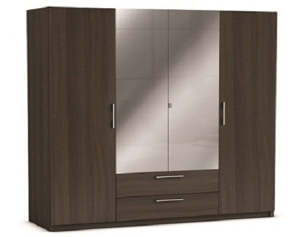

VitaLina+


Шкаф New York, vulcano
СПЕЦИАЛЬНОЕ ПРЕДЛОЖЕНИЕ! 319,00 Старая цена 443,00 Сбережете 124,00 –28%
Товар на складе (доставка 1 – 3 дня)
• Описание товара
• Технические характеристики Шкаф с 4-мя дверцами, две из которых с зеркалом. У шкафа 2 широких ящика на металлических шинах За средней дверцей 1 длинная штанга для одежды. За обеими крайними дверцами по 4 узких полки. Изготовлен из мебельной пластины с фольговым покрытием. Пластиковые серые ручки. Внутри шкаф светло-серого цвета. Изготовлено во Франции.